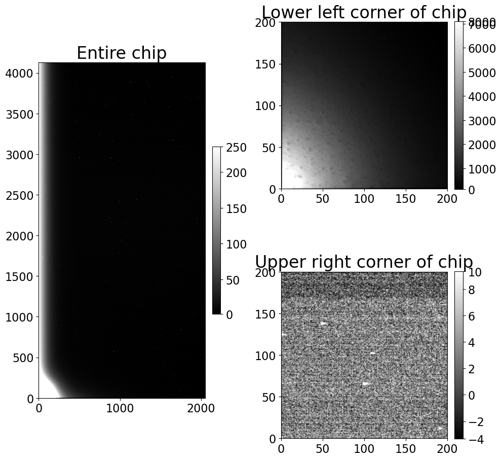
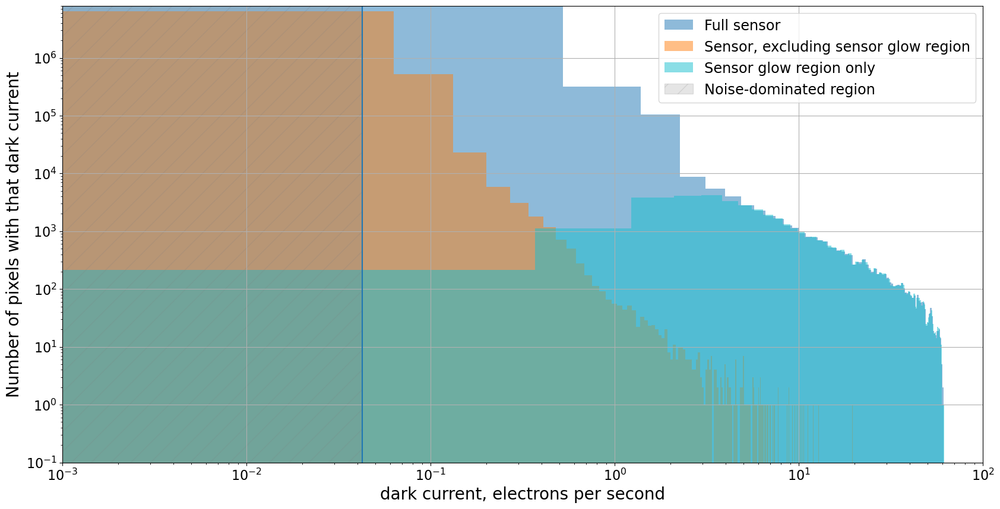
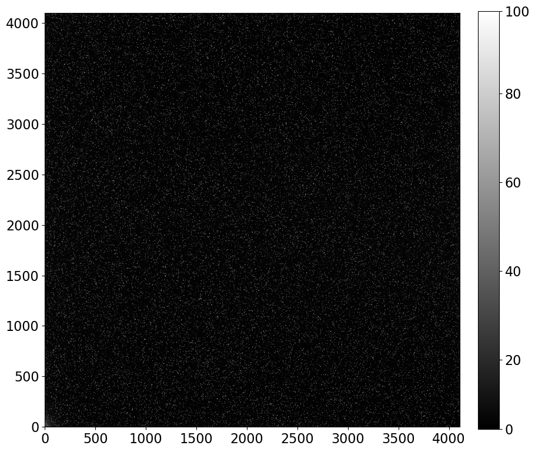
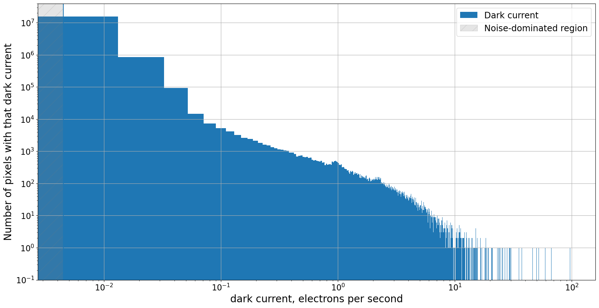
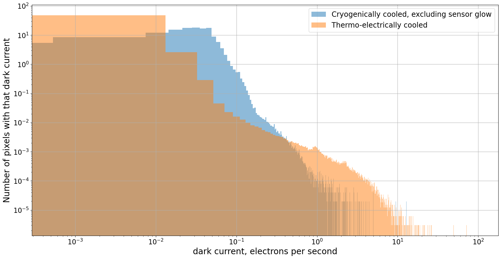

Реальный dark current: шум и другие артефакты
Contents
3.2. Реальный dark current: шум и другие артефакты#
Dark current в современных CCD, даже относительно недорогих, очень мал. В типичной экспозиции dark current, вероятно, меньше, возможно намного меньше, чем read noise. Несмотря на это, стоит изучить несколько dark frames вашей камеры, потому что не все пиксели имеют одинаковый dark current. Некоторые, называемые hot pixels, имеют гораздо более высокий dark current, чем остальная часть сенсора. Некоторые сенсоры имеют неастрономические источники отсчетов, значение которых пропорционально времени экспозиции, как dark current, но их происхождение связано с нетермальными эффектами.
Как и в notebook об overscan, мы сосредоточимся на паре камер, чтобы проиллюстрировать эту точку зрения и показать, как делать аналогичные изображения с вашей камерой и анализировать их.
from pathlib import Path
import matplotlib.pyplot as plt
import numpy as np
from astropy.nddata import CCDData
from astropy.visualization import hist
from convenience_functions import show_image
# Use custom style for larger fonts and figures
plt.style.use('guide.mplstyle')
3.2.1. Создание изображения для проверки hot pixels#
Измерение dark current в камере требует получения изображений с достаточно длительным временем экспозиции, в идеале достаточно длительным, чтобы ожидаемые отсчеты из-за dark current были больше, чем ожидаемый шум в изображении. Если это не так, то dark images будут измерять шум, а не dark current, как мы видели в предыдущем разделе.
Есть два способа убедиться, что вы измеряете dark current:
Сделайте несколько long-exposure dark frames. Время экспозиции должно быть достаточно длительным, чтобы ожидаемые dark counts были по крайней мере такими же большими, как шум, ожидаемый в одном изображении.
Сделайте несколько таких изображений и объедините их, чтобы уменьшить шум в результате. Шум в объединенном изображении пропорционален \(1/\sqrt{N}\), где \(N\) - количество объединенных изображений.
3.2.1.1. Что делать, если это невозможно?#
Делайте все возможное. Darks от Large Format Camera были сделаны в рамках научного запуска, в котором было ограниченное время для получения dark frames. Ключевой момент, который нужно иметь в виду, - это нижний предел dark current, который вы можете измерить, учитывая read noise и время экспозиции.
Darks в Case 2 были сделаны с новой камерой, которая еще не была установлена на телескопе в рамках ввода камеры в эксплуатацию. Это сделало получение более пяти часов dark frames более осуществимым!
3.2.2. Case 1: Криогенно охлаждаемая Large Format Camera (LFC) в Palomar#
Изображения в этом разделе получены с chip 0 LFC на телескопе Palomar 200-inch. Техническая информация о камере находится здесь. Техническая информация не содержит ничего об ожидаемом dark current этой камеры. Ожидается, что камеры, охлаждаемые жидким азотом, имеют практически нулевой dark current.
Что мы увидим с этой камерой:
не все пиксели имеют пренебрежимо малый dark current, и
не все отсчеты в dark image происходят от dark current.
3.2.2.1. Оценка времени экспозиции и количества кадров для измерения dark current#
К сожалению, техническая информация для этой камеры не включает никакой информации об ожидаемом dark current. Для термоэлектрически охлаждаемых камер dark current составляет не более 0.1 \(e^-\)/sec/pixel, а для более новых камер скорее 0.01\(e^-\)/sec/pixel. Здесь мы будем предполагать меньший dark current.
Read noise для этой камеры составляет 11\(e^-\)/pixel, поэтому время экспозиции, необходимое для достижения случая, когда dark counts равны read noise, составляет
Даже в этом случае мы получаем изображение, в котором доминирует read noise, а не dark current. Объединение 100 таких изображений уменьшит read noise в 10 раз, что было бы идеальным для точного измерения dark current в каждом пикселе. К сожалению, получение более 30 часов dark images нереально.
Вместо этого мы будем работать с тем, что у нас есть для этой камеры: три dark images, каждое по 300 секунд. Это устанавливает нижний предел для dark current, который мы можем измерить — мы сможем измерить dark current только для достаточно “горячих” пикселей — но это хотя бы дает нам некоторое представление о dark свойствах камеры.
Другой способ выразить это гораздо более позитивен: для большинства пикселей в изображении dark current просто не имеет значения, потому что он полностью подавлен read noise.
Сначала мы читаем изображение.
calibrated_images = Path('.')
combined_dark_lfc = CCDData.read(calibrated_images / 'combined_dark_300.000.fits.bz2')
WARNING: FITSFixedWarning: 'datfix' made the change 'Set MJD-OBS to 57460.000000 from DATE-OBS'. [astropy.wcs.wcs]
3.2.2.2. Изучение изображения#
Полное изображение слева, а нижний левый угол показан справа. Светлая область в нижнем левом углу обусловлена sensor glow — светом, излучаемым электроникой CCD. Отсчеты в изображении из-за sensor glow должны расти линейно со временем экспозиции, как и dark counts, но значения пикселей намного выше, чем для пикселей, чьи отсчеты обусловлены dark current.
Правая верхняя панель на рисунке ниже показывает часть CCD возле sensor glow; значения пикселей составляют несколько тысяч отсчетов. Правая нижняя панель показывает часть CCD в верхней правой части чипа; значения пикселей гораздо ниже, обычно менее 10.
fig = plt.figure(figsize=(10, 10))
whole_im_ax = plt.subplot(121)
glow_ax = plt.subplot(222)
dark_ax = plt.subplot(224)
show_image(combined_dark_lfc, cmap='gray', ax=whole_im_ax, fig=fig)
whole_im_ax.set_title('Entire chip')
show_image(combined_dark_lfc[:200, :200], cmap='gray', ax=glow_ax, fig=fig)
glow_ax.set_title('Lower left corner of chip')
show_image(combined_dark_lfc[-200:, -200:], cmap='gray', ax=dark_ax, fig=fig)
dark_ax.set_title('Upper right corner of chip')
plt.tight_layout()
WARNING: The following attributes were set on the data object, but will be ignored by the function: meta, unit [astropy.nddata.decorators]

3.2.2.3. Dark current в этом CCD#
Гистограмма ниже показывает dark current по горизонтальной оси и количество пикселей в CCD с таким dark current по вертикальной оси. Поскольку в darks очевиден sensor glow, показаны три распределения:
Полный сенсор, который на первый взгляд имеет некоторые пиксели с dark current до 10 \(e^-\)/sec.
Часть сенсора исключая sensor glow, в которой dark current, как и ожидалось, низкий, хотя есть небольшая доля “hot pixels” с dark current около 1 \(e^-\)/sec.
Область sensor glow. Эта область видна в скоплении пикселей с эквивалентным dark current 0.5\(e^-\)/sec и выше.
gain = 2.0
exposure_time = 300
dark_current_ln2 = gain * combined_dark_lfc.data / exposure_time
fig = plt.figure(figsize=(20, 10))
hist(dark_current_ln2.flatten(), bins=500, density=False, alpha=0.5, color='C0',
label='Full sensor');
hist(dark_current_ln2[200:, 200:].flatten(), bins=500, density=False, alpha=0.5, color='C1',
label='Sensor, excluding sensor glow region')
hist(dark_current_ln2[:200, :200].flatten(), bins=500, density=False, alpha=0.5, color='C9',
label='Sensor glow region only');
#plt.semilogy()
plt.loglog()
plt.grid()
noise_limit = 2 * 11/exposure_time/np.sqrt(3)
plt.vlines(2 * 11/exposure_time/np.sqrt(3), 0.1, 8e6)
plt.ylim(0.1, 8e6)
plt.xlim(1e-3, 1e2)
x_min, x_max = plt.xlim()
y_min, y_max = plt.ylim()
noisy_region = plt.Rectangle((x_min, y_min), noise_limit - x_min, y_max - y_min, label='Noise-dominated region',
color='gray', alpha=0.2, hatch='/')
ax = plt.gca()
ax.add_patch(noisy_region)
plt.legend()
plt.xlabel('dark current, electrons per second')
plt.ylabel('Number of pixels with that dark current');

3.2.3. Case 2: Термоэлектрически охлаждаемая камера#
3.2.3.1. Получение изображения для измерения dark current#
Изображение ниже представляет собой комбинацию 20 dark frames, каждый с экспозицией 1000 sec. Это время экспозиции было выбрано так, чтобы ожидаемое количество dark electrons было по крайней мере несколько больше, чем read noise, ожидаемый в комбинации 20 изображений. Как мы видели в предыдущем notebook, если это не так, dark frames будут измерять read noise вместо dark current.
Эта камера имеет dark current \(0.01 e^-\)/sec/pixel и read noise примерно \(10 e^-\)/read/pixel/, поэтому время экспозиции, при котором dark current равен read noise, составляет
Объединив 20 изображений, ожидаемый шум в комбинации уменьшается на коэффициент \(\sqrt{20}\) до \(2.2 e^-\)/pixel. Это помещает нас в предел “low read noise” в предыдущем notebook об идеальном dark current.
Измерение dark current после получения изображений относительно прямолинейно: вычтите bias, умножьте результат на gain и затем разделите на время экспозиции, чтобы получить dark current в \(e^-\)/pixel/sec.
dark_1000 = CCDData.read('combined_dark_exposure_1000.0.fit.bz2')
show_image(dark_1000, cmap='gray')
WARNING: FITSFixedWarning: 'datfix' made the change 'Set MJD-OBS to 58269.955093 from DATE-OBS'. [astropy.wcs.wcs]

3.2.3.2. Вычисление dark current для каждого пикселя#
Вспомним, что dark current \(d_c(T)\) задается формулой
где \(d_e(t)\) - количество dark electrons в изображениях. Это связано с dark counts, \(n_{dark}(t)\), значениями изображения, отображаемыми на изображении выше, через gain камеры, \(d_e(t) = g n_{dark}(t)\), так что
Эта конкретная камера имеет gain \(g = 1.5 e^-\)/ADU.
gain = 1.5
read_noise = 10.0
exposure_time = 1000
dark_current = gain * dark_1000.data / exposure_time
noisy_region = 2 * read_noise / exposure_time / np.sqrt(20)
plt.figure(figsize=(20, 10))
hist(dark_current.flatten(), bins=5000, density=False, label='Dark current');
plt.ylim(0.1, 4e7)
plt.vlines(noisy_region, *plt.ylim())
plt.loglog()
plt.grid()
x_min, x_max = plt.xlim()
y_min, y_max = plt.ylim()
noisy_region = plt.Rectangle((x_min, y_min), noisy_region - x_min, y_max - y_min, label='Noise-dominated region',
color='gray', alpha=0.2, hatch='/')
ax = plt.gca()
ax.add_patch(noisy_region)
plt.legend()
plt.xlabel('dark current, electrons per second')
plt.ylabel('Number of pixels with that dark current');

3.2.3.3. Существует большой диапазон dark current#
Хотя подавляющее большинство пикселей имеют, как и ожидалось, очень низкий dark current, он намного выше для других пикселей. Эти пиксели, называемые hot pixels, могут встречаться даже в криогенно охлаждаемых камерах.
Подавляющее большинство пикселей в изображении имеют dark current около значения, обещанного производителем, 0.01 \(e^-\)/sec; самые высокие номинально имеют dark current 98 \(e^-\)/sec.
Однако существует верхний предел для dark current, который может быть измерен в конкретной экспозиции, потому что CCD насыщается, когда отсчеты становятся достаточно большими. Другими словами, существует верхний предел для количества отсчетов, которые CCD может представить; для этой камеры предел составляет \(2^{16} -1\), или \(65,563\) counts. Если преобразовать это в dark current для экспозиции 1000 sec, это приблизительно
Для самых горячих пикселей в этом изображении это нижний предел dark current для этих пикселей.
Dark current также не очень хорошо оценивается для пикселей немного ниже максимума, потому что CCD перестают реагировать линейно, когда они превышают значение пикселя, которое зависит от камеры. Для этой камеры предел линейности составляет около 55,000 counts, что соответствует dark current примерно 82 \(e^-\)/sec.
Вы также можете, в принципе, проверить, имеют ли hot pixels постоянный dark current, который не меняется со временем, создав несколько таких darks при разных временах экспозиции и построив график dark current как функции времени экспозиции для hot pixels. Если dark current постоянен, то dark counts будут правильно удалены при вычитании dark из science image. Если dark current непостоянен, пиксель следует исключить из анализа.
Доля очень горячих пикселей, тех, которые выше 1 \(e^-\)/sec, относительно мала, примерно 0.1% пикселей.
plt.figure(figsize=(20, 10))
hist(dark_current_ln2[200:, 200:].flatten(), bins=5000, density=True, alpha=0.5, label='Cryogenically cooled, excluding sensor glow');
hist(dark_current.flatten(), bins=5000, density=True, alpha=0.5, label='Thermo-electrically cooled');
plt.grid()
plt.loglog()
plt.xlabel('dark current, electrons per second')
plt.ylabel('Number of pixels with that dark current');
plt.legend();

3.2.4. Как обрабатывать hot pixels#
Есть несколько способов, которые вы можете использовать в комбинации друг с другом:
Отметьте все пиксели выше определенного порога как плохие и создайте mask для отслеживания этих плохих пикселей.
Отметьте только пиксели с действительно высоким dark current как плохие и замаскируйте их; для остальных вычитайте dark current как обычно.
Всегда делайте dark images с временами экспозиции, соответствующими вашим flat и light frames, и вычитайте dark current как обычно.
Сделайте один набор darks с экспозицией, равной самому длинному времени экспозиции в ваших flat и light images, и масштабируйте dark current вниз для соответствия вашим другим временам экспозиции.
3.2.5. Чего НЕ делать#
Не делайте короткие dark frames и не масштабируйте их до более длительных времен экспозиции. Современные камеры, даже термоэлектрически охлаждаемые, имеют очень низкий dark current. Если ваши dark frames имеют короткое время экспозиции, то большинство пикселей измеряют read noise, а не dark current. Если вы перемасштабируете эти изображения на более длительное время экспозиции, вы неправильно усилите этот шум. В идеале, ожидаемые dark counts (или dark electrons) в ваших dark frames должны быть по крайней мере в несколько раз больше, чем ожидаемый read noise в кадрах, которые вы комбинируете для создания reference dark.
3.2.6. Резюме#
Dark frame измеряет dark current только в том случае, если ожидаемые dark counts превышают read noise камеры в несколько раз.
Сделайте несколько dark frames и объедините их, чтобы уменьшить уровень шума в объединенном изображении насколько это возможно.
Большинство пикселей в CCD имеют очень низкий dark current.
Следствие из 1 и 3 заключается в том, что вы почти никогда не должны масштабировать ваши dark frames до более длительного времени экспозиции, потому что вы будете усиливать шум вместо устранения dark current, даже если вы объединили несколько изображений, как в 2.
Идентифицируйте hot pixels и замаскируйте их или иным образом обработайте их.